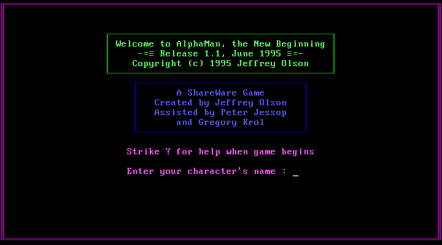
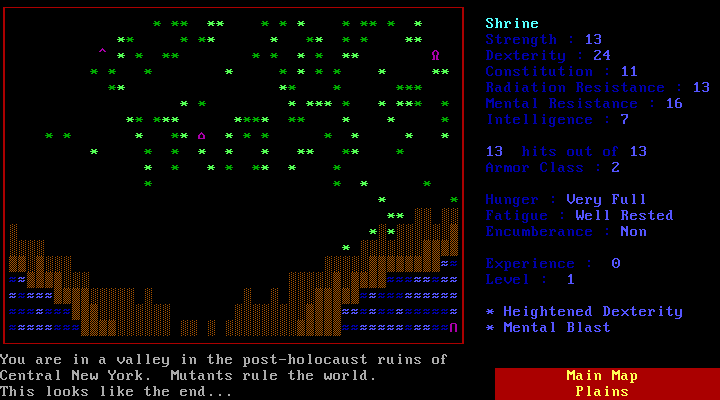
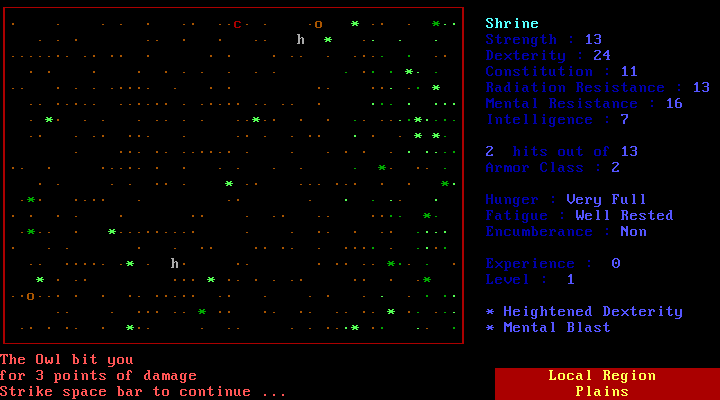
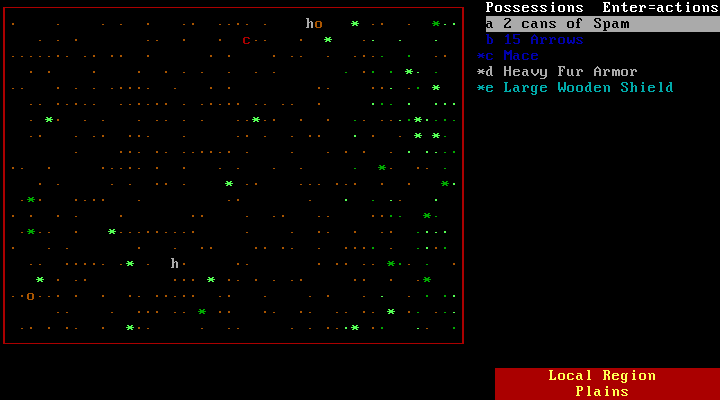

The New Beginning · a mutant, a valley, and the Grinch
> Enter the valleyAlphaMan shares no code with any other roguelike. Jeff Olson wrote it from scratch in QuickBASIC, and its readme names its inspiration: two TSR tabletop games by James Ward, Metamorphosis Alpha and Gamma World, whose “unwitting inspiration” the author acknowledges. The FAQ places the look “in the spirit of Rogue or NetHack”: coloured text-mode graphics, permanent death, unidentified items.
It was shareware, spread over FTP (ftp.win.tue.nl) and Usenet's rec.games.roguelike.misc in 1995, and had no children. Its source was released under the MIT licence and preserved by superjamie; this port is built from it. See the family tree, where it sits among the games only inspired by Rogue.
| Jeffrey R. Olson | Design, code, writing (1995) |
| Peter Jessop, Gregory Krol | “Assisted by”, on the title screen |
| James Ward (TSR) | Gamma World and Metamorphosis Alpha, the setting's inspiration |
| Tim Jordan, Matthias Kring, Tony Chang, Carl Waldbieser | Players whose ideas and bug reports shaped 1.02–1.1 (FIXES.TXT) |
| superjamie | Published the source (alphaman-src @ dda5598) under the MIT licence, with the FAQ and the spoilers |




A1.BAS–A8.BAS (about 14,600 lines) linked with a C helper library ALPCLIB.C (about 900 lines, Microsoft QuickC 2.5) for the screen, the dice and the map generator. All integer maths: DEFINT A-Z.alphaman.1….6) addressed by offset and length.ALPHA.CRE), castle layouts in ALPHA.CAS, item tables in ALPHA.GDY. Saves are NAME.ALF plus a .sav and the remembered castle levels.| Thing | Count | Notable ones |
|---|---|---|
| Classes, races | 0 | Everyone is a mutated human; the mutations are the class. |
| Physical mutations | 17 | Tough Exoskeleton, Quills, Tentacles, Acidic Saliva, Foul Musk, Radiation Generation, Heightened Speed. |
| Mental mutations | 13 | Cryogenics (damage doubles with every hit), Life Leech, Hypnosis, Psychokinesis, Military Genius, Scientific Genius. |
| Creatures | 158 + specials | 66 found anywhere, plus 18 castle, 17 forest, 17 swamp, 17 plains and 23 water creatures; then the Gilligan's Island castaways, the Munsters, Elvis (and impersonators), Buzz Aldrin, Chicago Cubs, Donald, Ivana and Marla, the Grinch and Max. Also Gumby, Pokey, Mr. Potato Head (takes 1 hp from any attack), Godzilla and King Kong. |
| Berries | 35 | Explode, Radiate, Rambify, Belch, Teleport, Make Invisible, Create force fields. |
| Small tech devices | 107 | 38 devices, 14 grenades, 37 weapons and 18 pieces of junk: Fusion Rifle, Light Sabre, Tip O'Neill Mask, Tickle Feather Gun, Chia Pet, Slinky. |
| Large tech items | 38 | 25 useful (Hovercraft, Jetpack, Transmogrifier, Cloaking Device) and 13 junk (Porta Potty, Sousaphone, Kevorkian Machine). |
| Weapons | 14 + 12 ranged | From pitchfork to duralloy sword; bows, slings and thrown things. |
| Armour, shields | 12, 9 | Heavy Fur to Duralloy; Titanium Chainmail is what a Tough Exoskeleton equals. |
| Castles | 6 | Five quest castles and the Grinch's hidden one, surrounded by radiation, a chasm and nerve gas. |
| Difficulties | 3 | Normal, somewhat easy, easy. |
Counts from ALPHA.DEC (nphysmut, nmentmut, ncreat…, nberry, nssd…) and ITEMLIST.
The game shipped with a readme rather than a manual: README.TXT (stats, mutations, items, keys, the shareware terms). Two more texts by the author, both published with the source: the FAQ (release history, all mutations, the quest) and the Spoilers, once reserved for registered users (every berry, device and creature, and the six castles). In the game, ? opens the help.
The author's spoilers file is the walkthrough: section 6 tells you castle by castle what to fetch and how. Rules of thumb from it and the FAQ:
ITEMS.EXE and MUTAT.EXE, DOS tools that add devices and berries or change the stats and mutations in a saved game. Not part of the web build.ALPHA.DBG are commented out.